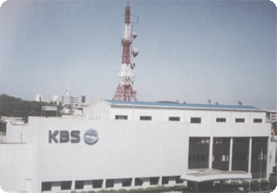
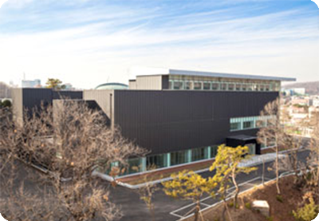
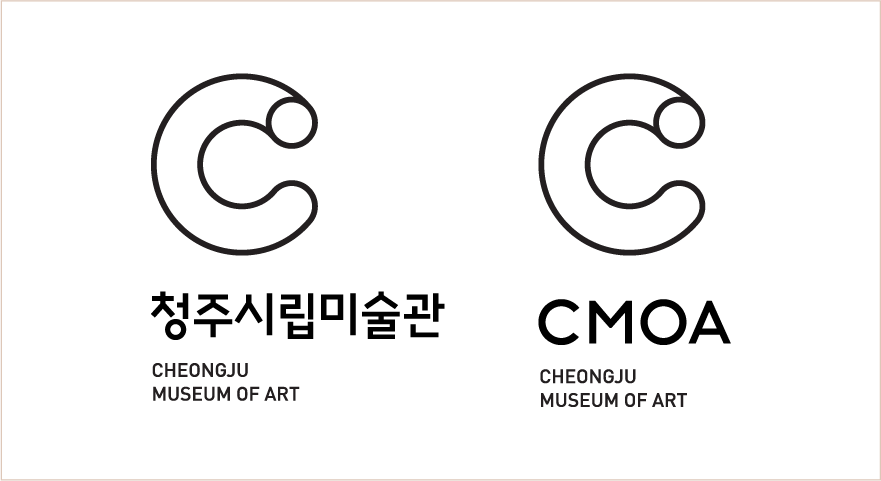
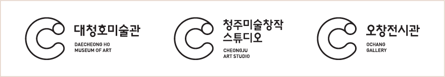
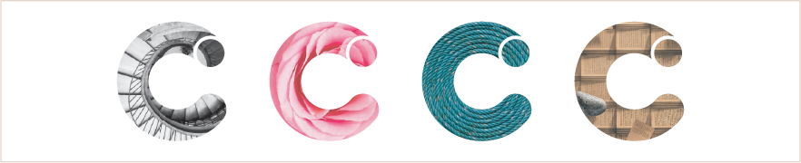

미술관 소개
청주시립미술관 소개
- 문화중심도시 청주시의 시립미술관입니다. 청주시립미술관은 지역을 대표하는 미술 문화공간으로 시민들에게 다양한 미술을 향유할 수 있는 장을 제공하고자 합니다.
- 하나, 동시대 미술의 실험적이며 선도적인 창작활동을 펼친 작가들의 조명으로 충북미술의 새로운 지도를 그리고 동아시아 중심 청주를 목표로 운영합니다.
- 둘, 4차산업혁명시대 새로운 융합의 전시를 선도하며, 지역의 문화적 생태계를 배양 특성화를 위해 노력하고, 환경 미술 분야에도 확장성을 지향합니다.
- 셋, 차세대 한국미술을 이끌 작가들을 발굴 지원하는 창작스튜디오의 혁신적 운영으로 우리나라 미술의 발전과 중부권 미술 인구의 확산에도 노력합니다.
- 우리 시대의 예술, 사상, 그리고 이슈들을 함께 탐구해나가겠습니다. 청주 시립 미술관에 많은 관심과 방문 부탁드립니다. 감사합니다.
- 청주시립미술관 일동
건축 Story
- 구 KBS 청주 방송국 청사를 리모델링한 문화도시 청주의 대표미술관
- 청주시립미술관은 구KBS청주방송국 사직동 청사(1978.11~2002.9)를 리모델링하여 지어진 건물로, 2014년 4월 착공하여 2015년 09월에 전시실 3실, 수장고 1실, 교육실 1실, 자료실 1실을 갖춘 청주의 대표 미술관으로 2016년 7월 1일 개관하였습니다.
-


Museum Identity
시민들에게 ‘CULTURAL PLAYGROUND’ 공간이 되는 청주시립미술관
평면적이면서도 입체적으로 상징화한 ‘C’는 청주의 대표이니셜인 동시에 작가와 관객,시민과 예술이 서로 소통하며 공감하는 통로의 역할을 하며, 예술의 시공간을 아우르는 창조적인 ‘아트튜브’를 표현한 것으로 시민들에게 ‘CULTURAL PLAYGROUND’ 공간이 되는 열린 공간으로서의 청주시립미술관의 모습을 담고있습니다.
- 시그니처 기본형
- 시그니처 기본형은 청주시립미술관의 핵심요소인 심벌마크와 로고타입이 상하로 조합된 것을 의미하며 이는 적용매체의 상황에 따라 공간, 레이아웃 등을 고려하여 사용합니다. 기능과 용도에 맞도록 국문, 영문 시그니처 시스템을 개발하였으며 국영문조합을 우선 적용합니다. 시그니처 사용 시 비례나 간격, 크기를 임의로 변경할 수 없습니다.
- 
- 시그니처 활용형
- 시그니처 활용형 좌우조합은 청주시립미술관의 산하에있는 분관들의 국,영문 로고타입과 청주시립미술관의 심벌마크와 좌우로 조합된 것을 의미하며 이는 적용매체의 상황에 따라 공간, 레이아웃 등을 고려하여 사용합니다. 시그니처 사용 시 비례나 간격, 크기 를 임의로 변경할 수 없습니다.
- 
- 시그니처 그래픽 요소
- 미술관의 시그니처가 청주시립미술관을 인지시키는 주요 요소라면, 그래픽요소는 청주시립미술관의 심벌마크와 함께 사용되어 매체의 특성을 살리고 청주시립미술관의 이미지를 부가하는 보조 역할을 수행합니다.
- 